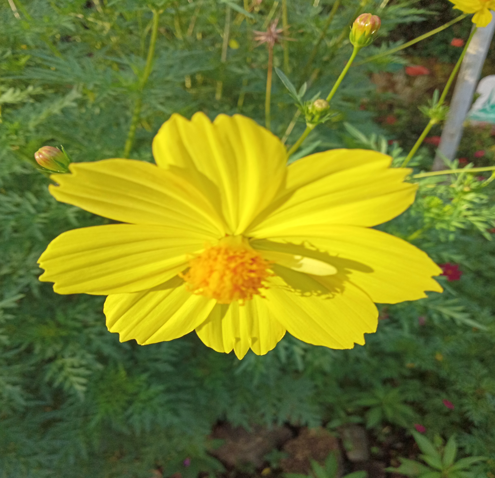
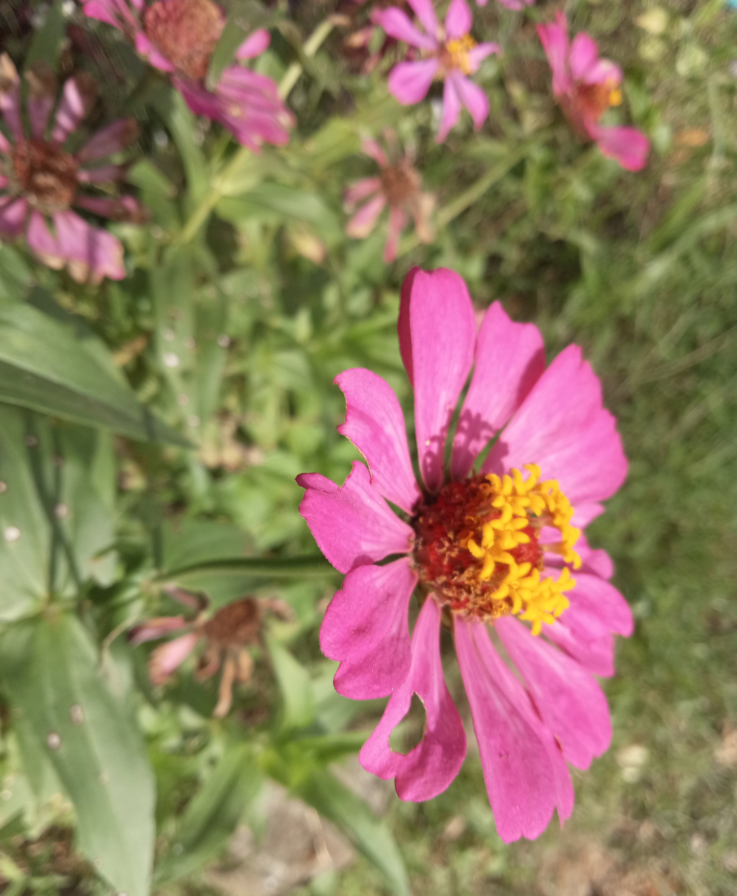
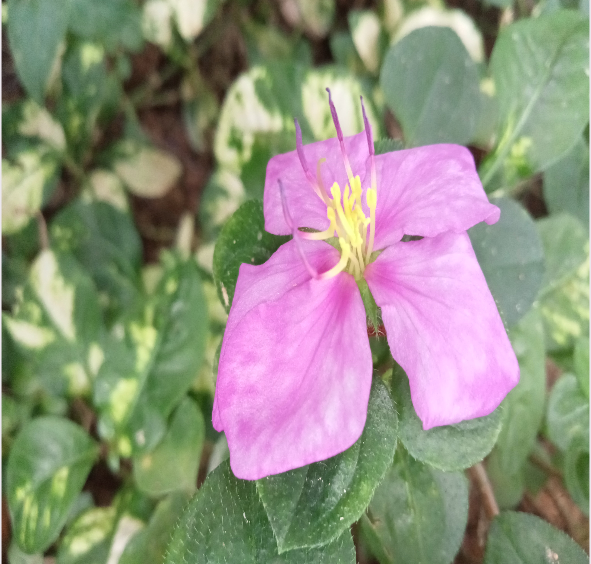
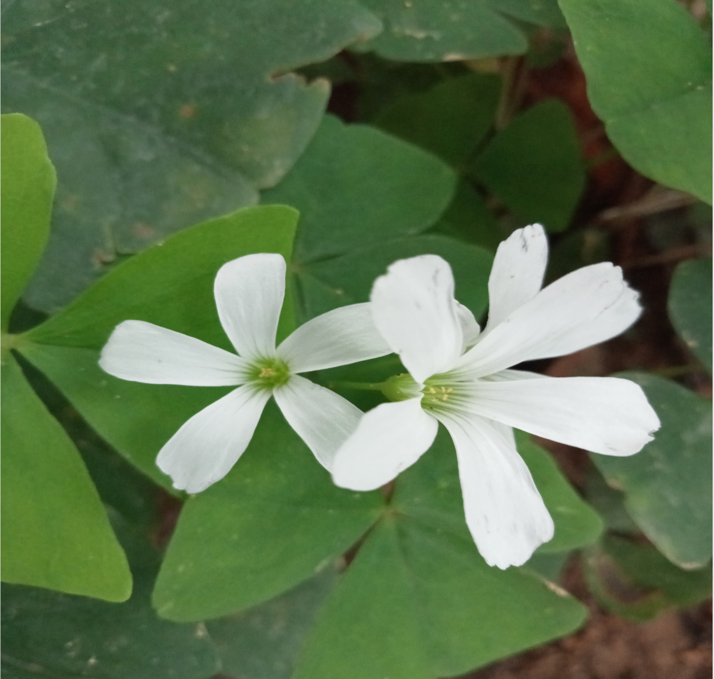

Just like love at first sight, it takes your breath away, leaves you speechless and if only for a moment, slows down time. In that instant, you feel the love and gratitude for Mother Nature exude from every inch of your body. A sunset possesses the promise of a new day. With the sun's last rays peeking out from the horizon comes the realization that tomorrow holds endless possibilities. You know it won't last, but savor every last bit of that fleeting beauty(freepeople.org, 2015).
   The flowers were a dancing rainbow, as if light and music had found a new way to blossom together(Abraham, 2020).